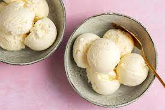

Ice Cream

Simplest Homemade Ice Cream
Simple, easy ice cream that is fun for the whole family, to make and to eat.
Ingredients:
- 2 cups of heavy cream
- 1 cup whole milk
- 2/3 cup sugar
- 1/8 teaspoon fine sea salt
- 6 large egg yolks
Directions:
-
Step 1
In a small pot, simmer heavy cream, milk, sugar and salt until sugar completely dissolves,
about 5 minutes. Remove pot from heat. In a separate bowl, whisk yolks. Whisking constantly,
slowly
whisk
about a third of the hot cream into the yolks, then whisk the yolk mixture back into the pot
with
the
cream.
Return pot to medium-low heat and gently cook until mixture is thick enough to coat the back of
a
spoon
(about 170 degrees on an instant-read thermometer).
-
Step 2
Strain through a fine-mesh sieve into a bowl. Cool mixture to room temperature. Cover and
chill at least 4 hours or overnight. Churn in an ice cream machine according to manufacturers’
instructions.
Serve directly from the machine for soft serve, or store in freezer until needed.
Homepage